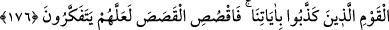

ve onun arzularına muhalefet kapılarını kapatmaz. Nitekim Rasûl-i Ekrem (s.a.v.)
Efendimiz’in, hulefâ-i raşidînin, sahabenin, tabiînin, selef imamlarının ve daha önce
gelip geçmiş meşayihin durumu böyledir.
Yine hakiki sâlik, yeme, içme, giyinme, evlenme, binit ve mesken konusunda kendisine
nimet ve dünyadan faydalanma kapısını açmaz. Çünkü gaybın gizliliklerinde Allah
Teâlâ’nın, hoşbaht (said) kulları için hazırladığı, hiçbir gözün görmediği, hiçbir kulağın
duymadığı ve hiçbir beşerin aklına gelmeyen gizli lütuf ve ihsanları olduğu gibi belaları
da vardır.
Bu sebeple ey sâdık sâlik, vuslata ve kemal noktalarına varmış kimse, dünyaya
dalarak, davranışlarında serbest davranarak ve nefsin arzularına tâbî olmak suretiyle bu
belalara uğramaktan sakın. (et-Te’vîlâtü’n-Necmiyye’de böyle geçmektedir.)
Kâşifî der ki: Şeyhülislâm dedi ki: Takdir rüzgârı nereden çıkar ve ne şaşkınlıklar
gösterir. Eğer fazl tarafından eserse, ateşperestin zünnarını din yolunun aşığının
kemerine döndürür. Eğer adl tarafından eserse, Bel‘am’ın tevhîdini atıp değersiz taşla
denk kılar.
Onu manastırdan götürüp ateşperestlerin tapınağına atarsın
Bunu puthaneden çekip, insanlara baş yaparsın
Senin işinde nasıl ve niçin zavallı aklı ne zaman ulaştırır
Mutlak ferman sahibi sensin; neyi istersen onu yaparsın
176. Dileseydik elbette onu bu ayetler sayesinde yükseltirdik. Fakat o, dünyaya
saplandı ve hevesinin peşine düştü. Onun durumu tıpkı köpeğin durumuna benzer:
Üstüne varsan da dilini çıkarıp solur, bıraksanda dilini sarkıtıp solur. İşte
ayetlerimizi yalanlayan kavmin durumu böyledir. Kıssayı anlat; belki düşünürler.
Yükseltmeyi “dileseydik elbette onu ayetlerle” bu ayetler ve onlara uygun olarak
yaşaması sebebiyle âlimlerden iyi olanların (ebrâr) mertebesine “yükseltirdik.”
Bazıları bu “ayetler”den maksadın İbrahim (a.s.)’a indirilen sahifeler olduğunu
söylemiştir. Bel‘am, bu sahifeleri veya ism-i a’zâmı da içine alan kelimeleri okumuştur.
“Fakat o, yere saplandı” dünyaya meyletti. Aksine hareket ettiği için onu yükseltmeyi
dilemedik. “Yer”den maksad, dünyâdır. Çünkü dünyadaki taşınır taşınmaz tüm mallar
“yer (arz)”dedir. Diğer dünya malları da yerden çıkarılır. “Saplanmak”, aslında bir şeyi
arzulayarak ve huzur bularak yönelmektir. Burada “yere saplanmak” Allah’ın ayetlerine